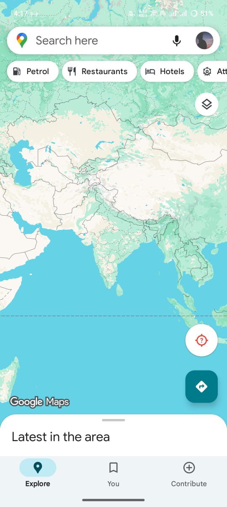

Step 1: Open Search Bar
Look at the top of the Google Maps screen. You will see a white search bar with the text "Search here" in the center. This search bar has a Google Maps pin icon on the left side. Tap on this search bar to open the search interface where you can type the name of the place you want to find.
Look at the top of the Google Maps screen. You will see a white search bar with the text "Search here" in the center. This search bar has a Google Maps pin icon on the left side. Tap on this search bar to open the search interface where you can type the name of the place you want to find.
Step 2: Select Triveni Ghat
Now you can see the search results. Look for the first recommendation that says "Triveni Ghat" in the list. This will be the main result for Triveni Ghat in Rishikesh, Uttarakhand. Tap on this result to view the location details and information about this place.
Now you can see the search results. Look for the first recommendation that says "Triveni Ghat" in the list. This will be the main result for Triveni Ghat in Rishikesh, Uttarakhand. Tap on this result to view the location details and information about this place.
Step 3: Get Directions
You can see the location details for Triveni Ghat. Look for a blue button that says "Directions" with a compass or arrow icon. This button is usually located in the middle section of the screen. Tap on this blue "Directions" button to get route options to reach this place.
You can see the location details for Triveni Ghat. Look for a blue button that says "Directions" with a compass or arrow icon. This button is usually located in the middle section of the screen. Tap on this blue "Directions" button to get route options to reach this place.
Step 4: Start Navigation
Google Maps is showing you the route options. Look for a large green button that says "Start" with a play icon. This button is usually located at the bottom left of the screen. Tap this green "Start" button to begin turn-by-turn navigation to Triveni Ghat.
Google Maps is showing you the route options. Look for a large green button that says "Start" with a play icon. This button is usually located at the bottom left of the screen. Tap this green "Start" button to begin turn-by-turn navigation to Triveni Ghat.

Congratulations! You've successfully learned how to navigate using Google Maps.